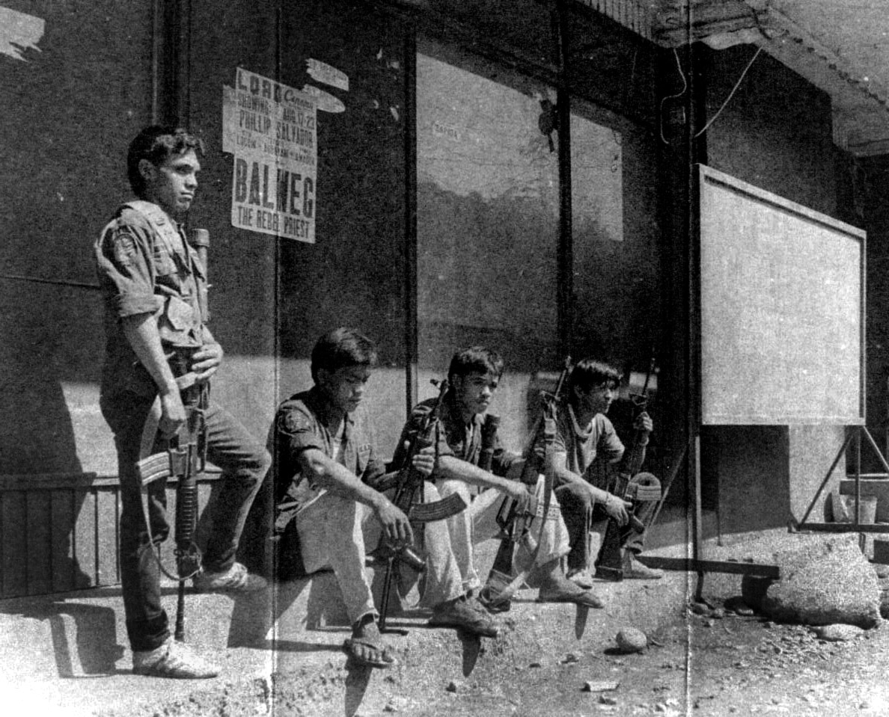
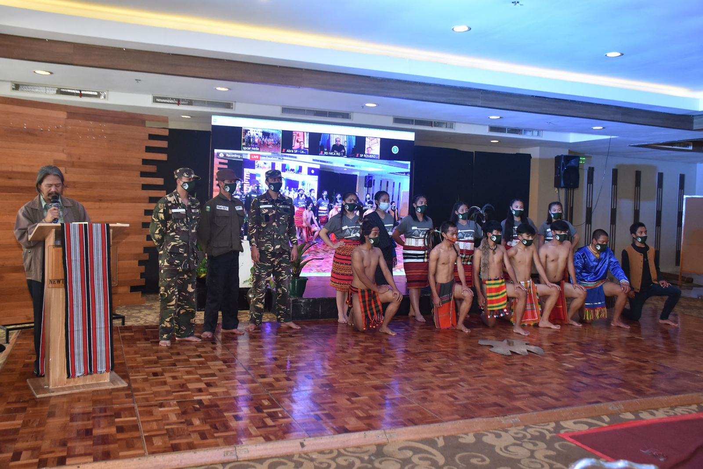
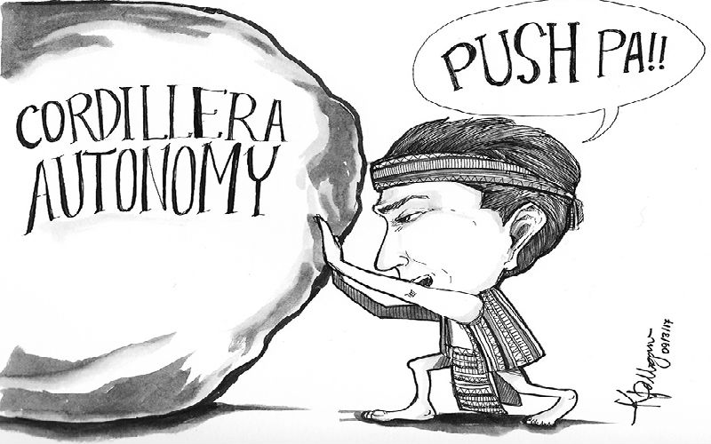

About the 1986 Sipat Peace Talks
Declaring September 13 to be a special non-working holiday in the Cordilleras, Malacañang issued Proclamation 324, which Executive Secretary Lucas Bersamin signed. This is because we recognize the first formal ceasefire made after the bloodless 1986 People Power Revolution. The Cordillera People's Liberation Army (CPLA), Balweg's militia, was given a bible, a rosary, and an assault rifle by Aquino, which led to the creation of the Sipat Kalinga peace treaty. In return, the CPLA gave her a spear and a shield as a sign of good faith and peacemaking. The peace agreement allowed the government to approach Balweg, who was against the rule of Ferdinand Marcos Sr. As a result, Baguio City and several other provinces were eventually established in the administrative region through Executive Order No. 220 in July 1987. According to Baguio City Mayor Benjamin Magalong, Sipat is proof of "the power of dialogue and understanding in resolving conflicts."
Why do we need to commemorate the 1986 Sipat Peace Talks?
The "Sipat" memorial serves as a timely reminder to the Cordillerans to protect the peace that was established during the momentous incident at Mount Data in 1986, which put a stop to hostilities between government forces and armed groups. The Cordillerans should thus use this year's celebration as an opportunity to reaffirm their dedication to actively contributing to maintaining peace and keeping the momentum toward achieving true regional sovereignty.

We have an accurate description of what happened during the "Sipat" from the late Mayor Gabino Ganggangan of Sadanga, Mountain Province, a former CPLA leader. He revealed that this occurred after Fr. Conrado Balweg founded the Cordillera Bodong Administration (CBA)-CPLA after leaving the New People's Army (NPA) in 1984 because the latter's agenda was incompatible with the CPLA's goal to promote unity and regional autonomy. Therefore, these goals ought to be the focal point of the "Sipat"'s yearly remembrance. Let's not let it be tarnished once more by organizations that claim to be promoting peace in the Cordillera through the leaders' justifiable struggles, but in reality, they are actually backing the violent revolutionaries that the CPLA opposed.
Previous Sipat Anniversary Commemoration
A major, historic, and cultural event that occurred 33 years ago in the Mt. Data Hotel, Bauko, Mountain Province, is commemorated on September 13 as a holiday throughout the Cordillera area.

President Corazon C. Aquino of the former revolutionary government flew in on that day, September 13, 1986, to meet with the leaders of the Cordillera led by Fr. Conrado Balweg of the Cordillera Peoples Liberation Army and Ama Mario Yag-ao of the Cordillera Bodong Administration for the creation of the "Sipat" peace treaty, which also refers to the laying down of arms and dialogue between two groups.
Learn more about the CAR - 1986 SIPAT PEACE TALKS
